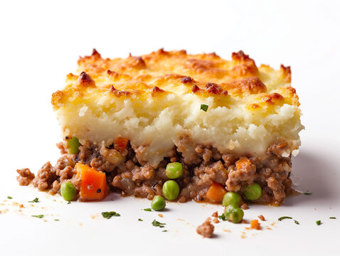

Pie Recipie

Ingredients
For the Filling:
- 1 tablespoon olive oil
- 1 large onion, finely chopped
- 2 carrots, finely chopped
- 2 cloves garlic, minced
- 500g lamb mince
- 2 tablespoons tomato purée
- 1 tablespoon plain flour
- 300ml beef stock
- 1 tablespoon Worcestershire sauce
- 1 teaspoon fresh thyme leaves (or 1/2 teaspoon dried thyme)
- Salt and freshly ground black pepper
- 150g frozen peas
For the Mash:
- 1kg potatoes, peeled and chopped
- 50g butter
- 100ml milk
- Salt and freshly ground black pepper
Instructions
1. Preparing the Filling:
- Heat the Olive Oil: In a large pan, heat the olive oil over medium heat.
- Sauté Vegetables: Add the chopped onion and carrots. Cook for 5-7 minutes until softened. Add the minced garlic and cook for another minute.
- Brown the Meat: Add the lamb mince to the pan and cook until browned all over.
- Add Tomato Purée and Flour: Stir in the tomato purée and flour, and cook for another 2 minutes.
- Add Stock and Seasoning: Pour in the beef stock, Worcestershire sauce, thyme, salt, and pepper. Bring to a simmer and cook for 20 minutes, stirring occasionally, until the mixture thickens.
- Add Peas: Stir in the frozen peas and cook for another 5 minutes.
2. Preparing the Mash:
- Cook the Potatoes: Place the potatoes in a large pot of salted water. Bring to a boil and cook until tender, about 15-20 minutes. Drain well.
- Mash the Potatoes: Return the drained potatoes to the pot. Add the butter and milk. Mash until smooth and creamy. Season with salt and pepper to taste.
3. Assembling the Shepherd's Pie:
- Preheat the Oven: Preheat your oven to 200°C (400°F).
- Layer the Filling: Spoon the lamb mixture into a baking dish, spreading it out evenly.
- Top with Mash: Spoon the mashed potatoes over the filling. Use a fork to spread it out and create a rough texture on top.
- Bake: Place the dish in the preheated oven and bake for 20-25 minutes, or until the top is golden brown and the filling is bubbling.
4. Finishing Touches:
- Rest and Serve: Let the Shepherd's Pie rest for a few minutes before serving. Enjoy hot.